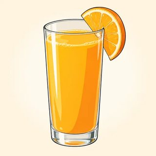
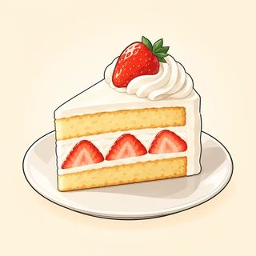

1 clean the kitchen
1 clean the kitchen 2 cook lunch
2 cook lunch 3 call her mother
3 call her mother 4 walk in the park
4 walk in the park 5 watch a movie
5 watch a movie🎧6 listen to music
Everything to print for Classes C1–C3: picture flashcards, the welcome question cards and the A1 diagnostic grid, new identity cards, the "Where were they?" information gap, the -ed sound sort, the picture-story cards, the irregular-verb memory game, the weekend mingle sheet, and the teacher's listening scripts.
| Set | What | How many | Used in |
|---|---|---|---|
| A | Picture flashcards (feelings & places, regular verbs, irregular verbs) | 1 set for the board | C1, C2, C3 |
| B | Welcome question cards (12: BE · DO · CAN) + A1 diagnostic grid | Cards: 1 set per 12 learners · grid: teacher only | C1 |
| C | New identity cards (3 A/B pairs: yesterday + last weekend) | 1–2 sets, on a side table | C1, C2, C3 |
| D | Listening & dictation scripts | Teacher only | C1, C2, C3 |
| E | "Where were they?" information gap A/B | 1 page per pair | C1 |
| F | -ed sound sort cards (3 headers + 24 verbs) | 1 set per group of 3–4 | C2 |
| G | Picture-story cards A/B + listener grid | 1 page per pair | C2 |
| H | Irregular-verb memory game (16 pairs + 4 bonus) | 1 set per group of 3–4 (card stock) | C3 |
| I | "What did you do last weekend?" mingle sheet | 1 per learner | C3 |
| — | Name tents (fold an A4 / letter sheet in three) | 1 per learner | C1 (keep all term) |


The base verb is on the card; learners say the past. Write /t/, /d/ or /ɪd/ on the back if you like.







One set per 12 learners (print two sets for a bigger class). Each learner takes one card of each color. They ask one question per partner, answer the partner's question, swap cards, and find a new partner. The small line is an extra question for stronger learners. Every card works with a new identity. None asks about the home country, age, family or migration, on purpose.
Listen during the welcome mingle and the report. Mark ✓ easy and accurate · ~ understands, some errors · ✗ not yet. Write one real example in Notes. Keep this page private; compare it with the Progress Test in C13.
| Name | BE I'm / she's / Are you…? | PRESENT SIMPLE I work · Do you…? · she works | CAN I can / Can you…? | Notes (an example I heard) |
|---|---|---|---|---|
BE: "I tired" / "She teacher" (no be) · "I have 30 years" · "Are you…?" word order. PRESENT SIMPLE: "I no like" · "You like coffee?" (no do) · "She like tea" (no -s) in the report. CAN: "I can to swim" · "I can swimming" · "Can you to…?"
Mostly ✓/~ = ready for A2. Many ~ in BE = go slowly with was/were today. ✗ in two or three columns = a private 5-minute oral placement interview this week (toolkit), and extra support from Day 1.
Any learner may use a card instead of their real life, in any task: no reason needed. In C1 use the Yesterday part (was / were). In C2 retell the Last weekend part with regular verbs only. In C3 use the whole weekend in the mingle. A and B cards in a pair share two things (for your monitoring, see the bottom of the page).
Yesterday: At 7 a.m. I was at the hospital. I was very busy. At 3 p.m. I was at the market. It was crowded. In the evening I was at home. I was tired!
Last weekend: On Saturday I worked. On Sunday I went to the park with my son. We played football and had ice cream. It was sunny. I didn't cook: we ate at my sister's house.
Yesterday: At 5 a.m. I was on my bus. The streets were quiet. At noon I was at a café. The coffee was terrible! In the evening I was at my brother's house. It was fun.
Last weekend: On Saturday I cleaned my apartment and cooked a big dinner. On Sunday I went to the park. I played football with friends. I didn't watch TV.
Yesterday: At 8 a.m. I was at my kids' school. At 10 I was in English class. It was great. At night I was at home with my family. We were happy.
Last weekend: On Saturday I visited my aunt. We talked and cooked together. On Sunday I studied English and wrote emails. I didn't go out.
Yesterday: At 9 a.m. I was in bed! At 11 I was at the restaurant. There were a lot of customers. At midnight I was at home. I was hungry.
Last weekend: On Saturday I worked. I made 200 sandwiches! On Sunday I studied English, then I watched a movie. I didn't go out.
Yesterday: In the morning I was in the garden. The weather was beautiful. In the afternoon I was at the doctor's. I wasn't sick; it was a checkup.
Last weekend: My grandchildren came to my house. We made a cake and played cards. On Sunday we walked to the market. I bought fruit and flowers.
Yesterday: At 9 a.m. I was at the library. At 2 p.m. I was at a job interview. I was nervous! In the evening I was with friends. It was fun.
Last weekend: On Saturday I went to the market and bought a new shirt for my interview. On Sunday I called my brother and we talked for two hours. I didn't cook.
Same (for your monitoring): Pair 1: went to the park on Sunday, played football. Pair 2: studied English on Sunday, didn't go out. Pair 3: went to / walked to the market, were with other people (grandchildren / friends).
Read at a natural but slow speed, with pauses. Read each script twice: once for gist, once to check. Use natural weak forms (I w'z tired) the second time. The 🔊 buttons in the online lessons give learners extra listening at home.
Answers: 1 T · 2 F (very busy) · 3 T · 4 T · 5 F (at her sister's house) · 6 T.
Answers: worked 1 · played 2 · wanted 3 · cooked 1 · cleaned 2 · visited 3 · watched 1 · arrived 2 · needed 3 · walked 1 · listened 2 · started 3 · talked 1 · stayed 2 · decided 3. Make /ɪd/ very clear; accept a small /t/ vs /d/ blur.
Answers: b hospital 1 · d market 2 · e cook 3 · f kitchen 4 · c phone 5 · a TV 6. went is the only irregular verb: don't stop for it.
Answers: 1 T · 2 F (the bus) · 3 T · 4 F (she didn't buy anything) · 5 F (a small restaurant) · 6 T. Stretch: "Which verbs are irregular?" (went, took, bought, ate, had, drank, saw, sang).
Answers are personal: Yes, I did. / No, I didn't. For 5, a short answer ("Rice and beans.") is fine. Listen for "Yes, I ate."
One page per pair; cut A from B. Partners sit face to face and don't show their cards. They ask: "Where was Omar on Saturday? How was it?" (one person) or "Where were Rosa and Ben?" (two people) and write short answers. Part 2 is personal: real life, a new identity card, or an imagined weekend.
| Who? | Where? | How was it? |
|---|---|---|
| 1 Lina | at the park 🌳 | sunny and beautiful · a lot of families |
| 2 Omar | ? | ? |
| 3 the Kim family | at the market 🛒 | very busy · a lot of people |
| 4 Mr. Díaz | ? | ? |
| 5 Rosa and Ben | at a party 🎉 | fun · a big cake |
| 6 Kofi | ? | ? |
Ask: Where was Omar on Saturday? How was it?
Ask your partner: How was your weekend? Where were you on Saturday? Was it good?
| Who? | Where? | How was it? |
|---|---|---|
| 1 Lina | ? | ? |
| 2 Omar | at a restaurant 🍽️ | expensive · the food was great |
| 3 the Kim family | ? | ? |
| 4 Mr. Díaz | at the airport ✈️ | terrible · his flight was late · angry |
| 5 Rosa and Ben | ? | ? |
| 6 Kofi | at home 🏠 | boring · sick · no food in the fridge |
Ask: Where was Lina on Saturday? How was it?
Ask your partner: How was your weekend? Where were you on Sunday? Were you busy?
Useful language: Can you say that again, please? · How do you spell it? · Stretch: make a full sentence with There was / There were: "There were a lot of families at the park."
One set per group. Cut the cards and the answer strip. Put the three header cards on the table (the fourth card "?" is for "not sure yet"). Learners take turns: take a card, say it out loud with a hand on the throat, and put it under /t/, /d/ or /ɪd/. The group agrees or says "Say it again!"
✂ Answer strip: /t/ worked, watched, cooked, walked, talked, finished, stopped, danced · /d/ played, studied, cleaned, listened, arrived, stayed, called, lived · /ɪd/ started, wanted, visited, needed, waited, decided, painted, ended.
One page per pair. Cut the two story cards; both learners share the listener grid. A tells Maria's Saturday with the past forms ("First, Maria cleaned the kitchen. Then she…"). B listens and writes 1–6 in the boxes under Maria's pictures. Swap: B tells Sam's Sunday. Positive sentences only; and, then, after that are welcome.
1 clean the kitchen2 cook lunch3 call her mother4 walk in the park5 watch a movieSay the past: clean → cleaned!
1 play football4 dance at a party5 study EnglishSay the past: play → played!
playcleanwalkcookdancecallstudywatchAnswers: Maria: clean 1 · cook 2 · call 3 · walk 4 · watch 5 · listen 6. Sam: play 1 · visit 2 · talk 3 · dance 4 · study 5 · stay 6. Each learner fills 6 boxes; the other 6 are their own story.
One set per group of 3–4, on card stock (learners must not see through the cards). Cut on the dashed lines. White = base verb · blue = past form · amber = bonus pairs for stronger groups. Shuffle; place face down in rows. Turn over two and say both words. A match = base + past. To keep the pair, say a past sentence: "Last weekend I bought shoes." After the game, turn your pairs into negatives: "I didn't buy shoes."
gohavegettakeeatbuygivefindwritereadBONUS · /rid/The cards are printed in pairs so you can check sets quickly after class; always shuffle before play. Easier: 8 pairs, face up, as a matching race. Harder: all 20 pairs, and every sentence needs a time word (last Sunday, two days ago). For read / read, the learner must say /rid/ and /rɛd/ to keep the pair.
Photocopy one per learner. Part 1: learners stand, walk, and ask four classmates the three questions; notes only (2–3 words). Part 2: "Find someone who…": ask Did you…? If the answer is "Yes, I did," write the name. At the end, three learners tell the class about one person with he / she + past. Real weekend, a new identity card (Set C), or a dream weekend: all are fine.
| Name | Where did you go? | What did you do? | Did you have a good time? |
|---|---|---|---|
| Find someone who… last weekend | Name | Extra question |
|---|---|---|
| 1. went to a market or a store | What did you buy? | |
| 2. cooked a big meal | What did you cook? | |
| 3. watched a movie or a game | Was it good? | |
| 4. visited a friend or family | Who did you visit? | |
| 5. didn't go out | What did you do at home? | |
| 6. got up before seven | Why? | |
| 7. worked | Were you tired? | |
| 8. ate at a restaurant | What did you eat? |
Before the mingle, drill the question change on the board: went → Did you go…? · ate → Did you eat…? · didn't go out → Did you go out? ("No, I didn't" gets the name!). Question 7 mixes in be: Did you work? → Were you tired? Learners with a new identity card answer as their card person.